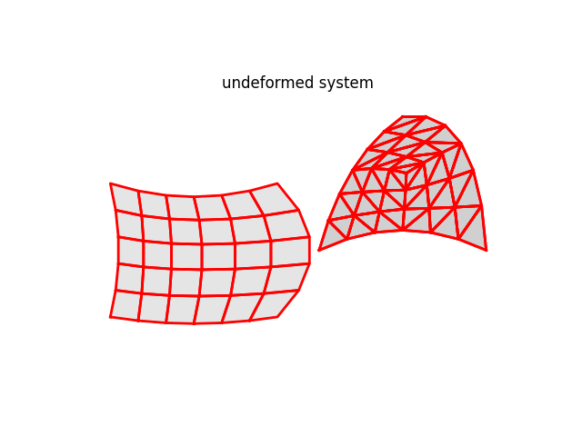
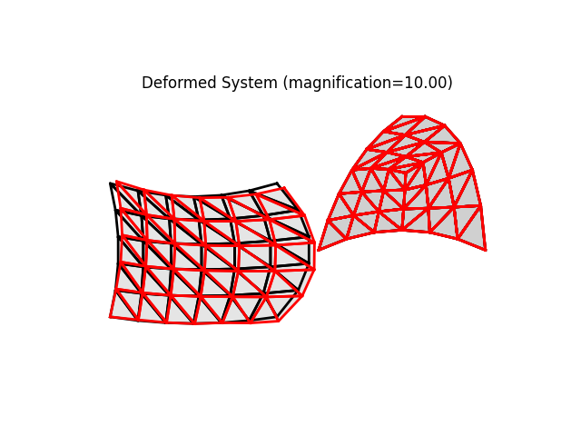

Note
Go to the end to download the full example code
Patch test for triangular plate under in-plane loading
PatchMesher test for the LinearTriangle (Constant Strain Triangle)
import math
import numpy as np
from femedu.examples import Example
from femedu.domain import System, Node
from femedu.solver import NewtonRaphsonSolver
from femedu.elements.linear import Quad, Triangle
from femedu.materials import PlaneStress
from femedu.mesher import *
class ExamplePlate04(Example):
def problem(self):
# ========== setting mesh parameters ==============
Nx = 7 # number of elements in the mesh
Ny = 6 # number of elements in the mesh
Lx = 100.0 # length of plate in the x-direction
Ly = 80.0 # length of plate in the y-direction
# ========== setting material parameters ==============
params = dict(
E = 20000., # Young's modulus
nu = 0.250, # Poisson's ratio
t = 1.00 # thickness of the plate
)
# ========== setting load parameters ==============
px = 10.0 # uniform load normal to x=const
py = 0.0 # uniform load normal to y=const
pxy = 0.0 # uniform shear load on x=const and y=const
# ========== setting analysis parameters ==============
target_load_level = 1.00 # reference load
max_steps = 2 # number of load steps: 2 -> [0.0, 1.0]
# define a list of target load levels
load_levels = np.linspace(0, target_load_level, max_steps)
#
# ==== Build the system model ====
#
model = System()
model.setSolver(NewtonRaphsonSolver())
# create reference points
pt0 = (0,0)
pt1 = (0.5*Lx,0)
pt2 = (Lx,Ly)
pt3 = (0,Ly)
pt4 = (0.25*Lx, 0.0)
pt5 = (0.65*Lx, Ly/2)
pt6 = (0.55*Lx, Ly)
pt7 = (0.0, Ly/2)
pt8 = (0.325*Lx, 0.55*Ly)
pt9 = (Lx,0.0)
mesher1 = PatchMesher(model,
pt0, pt1, pt2, pt3, # corner nodes
pt4, pt5, pt6, pt7, # mid-side nodes
pt8) # center node
#nodes1, elements1 = mesher1.triangleMesh(Nx, Ny, LinearTriangle, PlaneStress(params))
nodes1, elements1 = mesher1.quadMesh(Nx, Ny, Quad, PlaneStress(params))
mesher2 = TriPatchMesher(model,
pt1, pt9, pt2, # corner nodes
None, None, pt5, # mid-side nodes
)
#mesher2.shift(1.25*Lx, Ly/2)
nodes2, elements2 = mesher2.triangleMesh(Ny, Triangle, PlaneStress(params))
#nodes2, elements2 = mesher2.quadMesh(Ny, Triangle, PlaneStress(params))
# tie the patches together
mesher1.tie(mesher2)
nodes = nodes1 + nodes2
elements = elements1 + elements2
# define support(s)
## find nodes at y==0 and x==0
for node in nodes:
X = node.getPos()
if math.isclose(X[0], 0.0):
node.fixDOF('ux') # horizontal support left side
if math.isclose(X[1], 0.0):
node.fixDOF('uy') # vertical support at y==0
# ==== complete the reference load ====
Xo = np.array([Lx, 0.0])
No = np.array([1.0, 0.0])
for node in nodes:
X = node.getPos()
if math.isclose(X[0],Lx):
print(node)
for elem in node.elements:
print('+', elem)
for face in elem.faces:
for x, area in zip(face.pos, face.area):
if np.abs( (x - Xo) @ No ) < 1.0e-2 and No @ area / np.linalg.norm(area):
face.setLoad(px, 0.0)
#model.report()
model.plot(factor=0, title="undeformed system", filename="plate04_undeformed.png", show_bc=1, show_loads=1)
model.setLoadFactor(10.0)
model.solve()
#model.report()
model.plot(factor=10., filename="plate04_deformed.png")
Run the example by creating an instance of the problem and executing it by calling Example.run()
if __name__ == "__main__":
ex = ExamplePlate04()
ex.run()
- 
- 
Node_392:
x: [100. 80.]
u: None
+ Quad_502: nodes ( Node_383 Node_384 Node_392 Node_391 )
material: list
strain (0): xx=0.000e+00 yy=0.000e+00 xy=0.000e+00 zz=-0.000e+00
stress (0): xx=0.000e+00 yy=0.000e+00 xy=0.000e+00 zz=0.000e+00
strain (1): xx=0.000e+00 yy=0.000e+00 xy=0.000e+00 zz=-0.000e+00
stress (1): xx=0.000e+00 yy=0.000e+00 xy=0.000e+00 zz=0.000e+00
strain (2): xx=0.000e+00 yy=0.000e+00 xy=0.000e+00 zz=-0.000e+00
stress (2): xx=0.000e+00 yy=0.000e+00 xy=0.000e+00 zz=0.000e+00
strain (3): xx=0.000e+00 yy=0.000e+00 xy=0.000e+00 zz=-0.000e+00
stress (3): xx=0.000e+00 yy=0.000e+00 xy=0.000e+00 zz=0.000e+00
+ Triangle_537: nodes ( Node_418 Node_419 Node_420 )
material: PlaneStress
strain: xx=0.000e+00 yy=0.000e+00 xy=0.000e+00 zz=-0.000e+00
stress: xx=0.000e+00 yy=0.000e+00 xy=0.000e+00 zz=0.000e+00
Node_399:
x: [100. 0.]
fix: ['uy']
u: None
+ Triangle_508: nodes ( Node_398 Node_399 Node_405 )
material: PlaneStress
strain: xx=0.000e+00 yy=0.000e+00 xy=0.000e+00 zz=-0.000e+00
stress: xx=0.000e+00 yy=0.000e+00 xy=0.000e+00 zz=0.000e+00
Node_405:
x: [100. 13.33333333]
u: None
+ Triangle_508: nodes ( Node_398 Node_399 Node_405 )
material: PlaneStress
strain: xx=0.000e+00 yy=0.000e+00 xy=0.000e+00 zz=-0.000e+00
stress: xx=0.000e+00 yy=0.000e+00 xy=0.000e+00 zz=0.000e+00
+ Triangle_517: nodes ( Node_404 Node_405 Node_410 )
material: PlaneStress
strain: xx=0.000e+00 yy=0.000e+00 xy=0.000e+00 zz=-0.000e+00
stress: xx=0.000e+00 yy=0.000e+00 xy=0.000e+00 zz=0.000e+00
+ Triangle_518: nodes ( Node_405 Node_404 Node_398 )
material: PlaneStress
strain: xx=0.000e+00 yy=0.000e+00 xy=0.000e+00 zz=-0.000e+00
stress: xx=0.000e+00 yy=0.000e+00 xy=0.000e+00 zz=0.000e+00
Node_410:
x: [100. 26.66666667]
u: None
+ Triangle_517: nodes ( Node_404 Node_405 Node_410 )
material: PlaneStress
strain: xx=0.000e+00 yy=0.000e+00 xy=0.000e+00 zz=-0.000e+00
stress: xx=0.000e+00 yy=0.000e+00 xy=0.000e+00 zz=0.000e+00
+ Triangle_525: nodes ( Node_409 Node_410 Node_414 )
material: PlaneStress
strain: xx=0.000e+00 yy=0.000e+00 xy=0.000e+00 zz=-0.000e+00
stress: xx=0.000e+00 yy=0.000e+00 xy=0.000e+00 zz=0.000e+00
+ Triangle_526: nodes ( Node_410 Node_409 Node_404 )
material: PlaneStress
strain: xx=0.000e+00 yy=0.000e+00 xy=0.000e+00 zz=-0.000e+00
stress: xx=0.000e+00 yy=0.000e+00 xy=0.000e+00 zz=0.000e+00
Node_414:
x: [100. 40.]
u: None
+ Triangle_525: nodes ( Node_409 Node_410 Node_414 )
material: PlaneStress
strain: xx=0.000e+00 yy=0.000e+00 xy=0.000e+00 zz=-0.000e+00
stress: xx=0.000e+00 yy=0.000e+00 xy=0.000e+00 zz=0.000e+00
+ Triangle_531: nodes ( Node_413 Node_414 Node_417 )
material: PlaneStress
strain: xx=0.000e+00 yy=0.000e+00 xy=0.000e+00 zz=-0.000e+00
stress: xx=0.000e+00 yy=0.000e+00 xy=0.000e+00 zz=0.000e+00
+ Triangle_532: nodes ( Node_414 Node_413 Node_409 )
material: PlaneStress
strain: xx=0.000e+00 yy=0.000e+00 xy=0.000e+00 zz=-0.000e+00
stress: xx=0.000e+00 yy=0.000e+00 xy=0.000e+00 zz=0.000e+00
Node_417:
x: [100. 53.33333333]
u: None
+ Triangle_531: nodes ( Node_413 Node_414 Node_417 )
material: PlaneStress
strain: xx=0.000e+00 yy=0.000e+00 xy=0.000e+00 zz=-0.000e+00
stress: xx=0.000e+00 yy=0.000e+00 xy=0.000e+00 zz=0.000e+00
+ Triangle_535: nodes ( Node_416 Node_417 Node_419 )
material: PlaneStress
strain: xx=0.000e+00 yy=0.000e+00 xy=0.000e+00 zz=-0.000e+00
stress: xx=0.000e+00 yy=0.000e+00 xy=0.000e+00 zz=0.000e+00
+ Triangle_536: nodes ( Node_417 Node_416 Node_413 )
material: PlaneStress
strain: xx=0.000e+00 yy=0.000e+00 xy=0.000e+00 zz=-0.000e+00
stress: xx=0.000e+00 yy=0.000e+00 xy=0.000e+00 zz=0.000e+00
Node_419:
x: [100. 66.66666667]
u: None
+ Triangle_535: nodes ( Node_416 Node_417 Node_419 )
material: PlaneStress
strain: xx=0.000e+00 yy=0.000e+00 xy=0.000e+00 zz=-0.000e+00
stress: xx=0.000e+00 yy=0.000e+00 xy=0.000e+00 zz=0.000e+00
+ Triangle_537: nodes ( Node_418 Node_419 Node_420 )
material: PlaneStress
strain: xx=0.000e+00 yy=0.000e+00 xy=0.000e+00 zz=-0.000e+00
stress: xx=0.000e+00 yy=0.000e+00 xy=0.000e+00 zz=0.000e+00
+ Triangle_538: nodes ( Node_419 Node_418 Node_416 )
material: PlaneStress
strain: xx=0.000e+00 yy=0.000e+00 xy=0.000e+00 zz=-0.000e+00
stress: xx=0.000e+00 yy=0.000e+00 xy=0.000e+00 zz=0.000e+00
Node_420:
x: [100. 80.]
following Node_392
u: None
+ Triangle_537: nodes ( Node_418 Node_419 Node_420 )
material: PlaneStress
strain: xx=0.000e+00 yy=0.000e+00 xy=0.000e+00 zz=-0.000e+00
stress: xx=0.000e+00 yy=0.000e+00 xy=0.000e+00 zz=0.000e+00
+
Total running time of the script: (0 minutes 0.865 seconds)